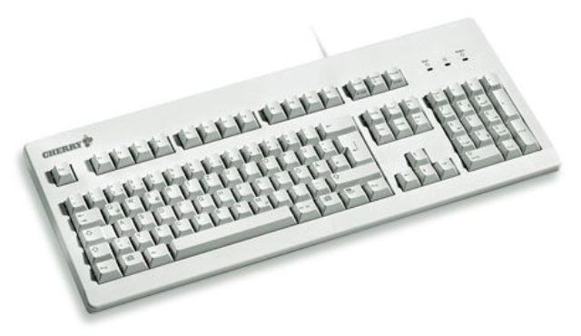
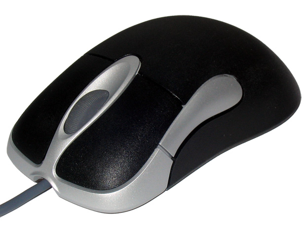
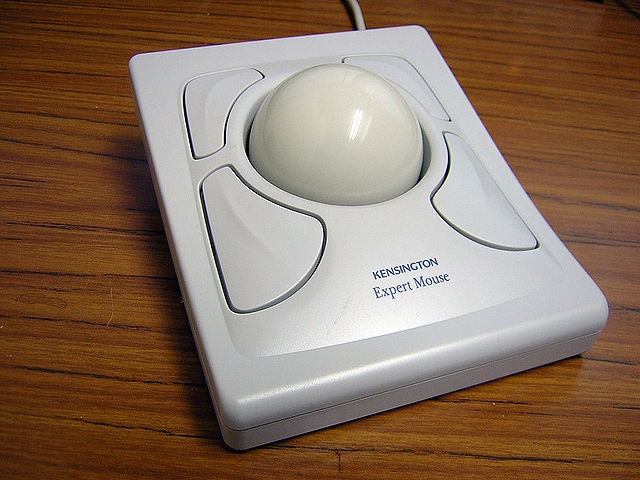
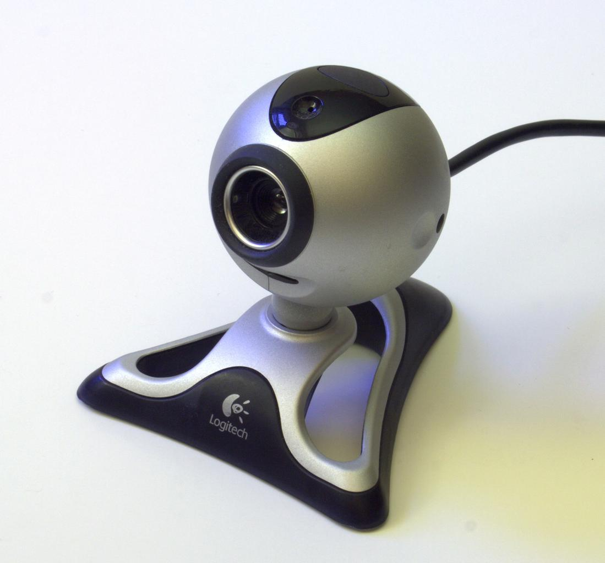
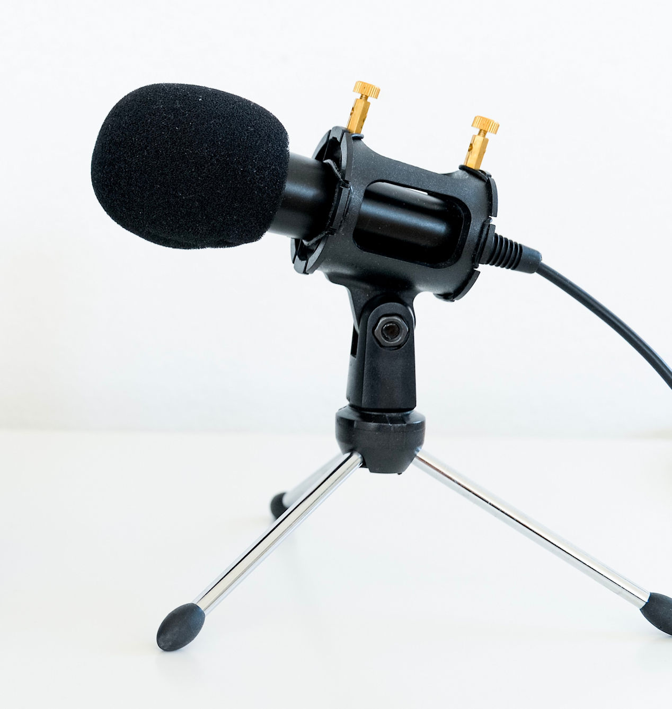

Hardware (Things You Can Touch)
Computer hardware is the set of devices that combine to do the computing. This page introduces the eight types of hardware that every computer must have in order to perform its essential tasks.
There are many different ways you can provide data and instructions to a computer, and many different types of input devices that enable you to do so. An input device might be plugged into an external port or jack on a computer (like a mouse), or installed in the computer's case (like the touchscreen on a phone). External devices can also be connected wirelessly, using Bluetooth or Wi-Fi.
Following are some of the most commonly used input devices, and how they communicate with computers.
|  | Keyboard: A set of 70-120 typewriter-style keys. Pressing a key on the keyboard sends a signal identifying that key to the computer. |
|  | Mouse: A device usually about the size of a deck or two of playing cards, with one or more buttons attached. When you move the mouse around on a convenient flat surface, a pointer appears on the screen that responds according to the movement. Pressing a button on the mouse sends a signal indicating that you want to initiate some action at the location of the pointer. |
|  | Trackball: A smooth sphere, varying from the size of a marble to that of a pool ball, mounted in a housing with one or more accompanying buttons. The ball sticks out of the housing so you can rotate it in any direction. A pointer moves on the screen according to the direction and speed of the ball's rotation. Pressing a button sends a signal indicating that you want to initiate some action at the location of the pointer. |
| Touchpad: A small touch-sensitive surface representing the computer screen. A pointer appears on the screen that responds to the movement of your finger on the touchpad. Tapping your finger on the touchpad sends a signal indicating that you want to initiate some action at the location of the pointer. |
|
| Touchscreen: A transparent touch-sensitive layer on top of a computer's display screen, which enables you to use your fingers to tap, drag, and convey other movement to the computer. When a finger touches the screen, it sends a signal indicating the finger's position on the screen. |
|
| Image scanner: TBD |
|
|  | Camera: A computer camera connects directly to the computer, converts visual information to a digital signal, and relies on software that's installed on the computer to record, store, and edit the resulting video and photo data. |
|  | Microphone: A computer microphone connects directly to the computer, converts sound to a digital signal, and relies on software that's installed on the computer to record, store, and edit the resulting data. |
At this point, the way a computer responds to an input device is undefined, as it depends entirely on the software currently running on the computer. For example, a keyboard doesn't have to produce letters, numbers, and symbols on the screen; the software interpreting the input can respond in any way the software manufacturer decides is useful.
Almost every modern computer, from a powerful supercomputer to the phone in your pocket, relies on four core pieces of hardware that are inside the computer case. These devices are essential for a computer to run: the central processing unit, the read-only memory, the main memory, and the electronic circuitry connecting everything.
The CPU is the brain of your computer. It's an electronic chip — a combination of billions of transistors and other components, clustered together as tightly as possible to make it run as fast as possible. The typical CPU in a desktop computer looks like a 1-2 inch square of metal or plastic, its underside covered with electrical connecting points. It manipulates data according to instructions submitted to it by other hardware components, then returns the results.
CPUs recognize a very small set of very simple instructions called machine code, and can execute only one instruction at a time. Each instruction accomplishes very little, but a CPU executes billions of instructions per second, which add up to produce most of the activity you see on your computer (and a lot of activity that you don't see).
A CPU has a basic problem: It contains no instructions for running the computer when you turn it on. Instead, it looks for instructions on a special memory chip that holds the computer’s basic startup and operating instructions: read-only memory.
A ROM chip is a type of computer memory that keeps its contents whether the computer is on or off. Those contents are very hard to change or delete, so ROM is perfect for providing the basic startup and operating instructions that the CPU can always rely on. The instructions on the ROM chip are known as the Basic Input/Output System, or BIOS. The CPU's first task is to get the BIOS instructions from ROM.
There are other ROM chips in a computer, but we rarely discuss them on this site, so when you see any mention of ROM, you can assume we mean the one containing the BIOS.
Getting information from ROM is a relatively slow process compared to the speed of the CPU. If the CPU had to retrieve information from ROM every time it needed help controlling the computer's hardware, it would slow the computer down to a crawl. CPUs have practically no data storage space of their own, so they need the ROM contents to be in a place with the fastest access possible: main memory.
Main memory is designed to enable the fastest possible access to its contents. The CPU can only read from a ROM chip, but it must be able to add, read, update, and delete the contents of a RAM chip, at maximum speed. Main memory serves as temporary working space that won't slow down the CPU. However, the price paid for high speed is impermanence — the data in RAM ceases to exist when no power is applied to the RAM chip.
When you turn on a computer, the CPU first moves the BIOS instructions from slow, permanent ROM to fast, volatile RAM, then proceeds to retrieve and execute them from RAM. When you turn the computer off (or the power fails), the main memory is completely cleared of its contents. This cycle starts over when the computer is next turned on.
Click image to enlarge
For a computer to work, its CPU, ROM, and RAM chips (and all of its other internal components) need to be connected to each other, and to external devices and systems. The computer's main circuitry, known generally as a printed circuit board (PCB), and more specifically as a motherboard (the main PCB), consists of a flat panel of non-conductive material like plastic or fiberglass with exceptionally thin lines of copper film deposited on one or both sides. These copper lines carry electricity between the various components, which are either soldered to the endpoints of the copper paths, or plugged into sockets that are soldered to the endpoints.
On many desktop computers there are sockets for the CPU, ROM, RAM, advanced display components and other specialized parts, as well as ports for external hardware along the edges of the motherboard. Anything that plugs into a socket or a port can be upgraded by the user. On smaller systems most of the components are directly attached and can't be replaced.